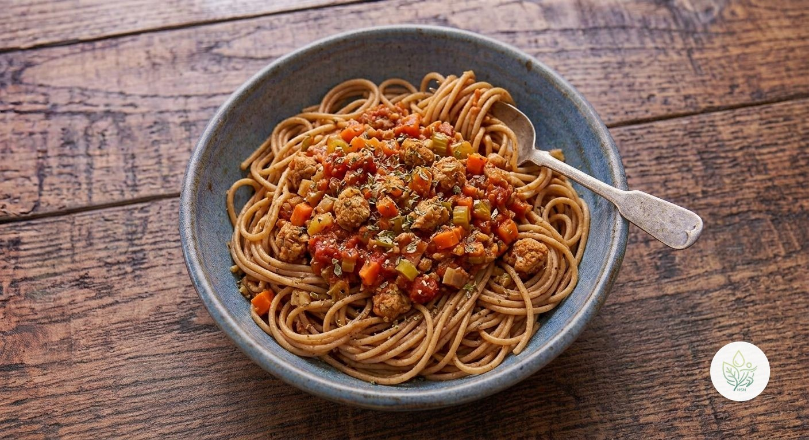

Pasta Integral a la Boloñesa Saludable
ALa boloñesa de siempre, pero 100% vegetal: soja texturizada en vez de carne picada, con el sofrito clásico de cebolla, zanahoria y apio. Más de 87 g de proteína y 45 g de fibra en el plato completo.
La soja texturizada se obtiene de harina de soja desgrasada, así que aporta muchísima proteína vegetal completa y fibra con muy poca grasa, muy por encima de lo que aportaría la carne picada que sustituye. El sofrito de cebolla, zanahoria y apio es la base clásica de cualquier boloñesa, y el orégano y el ajo dan todo el sabor sin necesidad de sal añadida.
Ingredientes (toca el nombre para ver su ficha)
- 370 g
- 120 g
- 80 g
- 60 g
- 60 g
- 300 g
- 8 g
- 3 g
- 15 g
Elaboración
- Pica finamente la cebolla, la zanahoria, el apio y el ajo.
- Rehidrata la soja texturizada en agua caliente o caldo durante 10 minutos; escúrrela bien apretando con las manos para quitar el exceso de líquido.
- Sofríe la cebolla, la zanahoria, el apio y el ajo en una sartén grande con el AOVE a fuego medio, hasta que estén blandos (8-10 minutos).
- Añade la soja texturizada escurrida y cocina unos minutos, removiendo.
- Incorpora el tomate troceado y el orégano, y deja cocer a fuego medio-bajo 20-25 minutos, removiendo de vez en cuando, hasta que la salsa espese.
- Mientras tanto, cuece la pasta integral según las instrucciones del envase.
- Escurre la pasta y mézclala con la salsa boloñesa, o sírvela con la salsa por encima.
Información nutricional (receta completa, 2 raciones)
De las grasas, 3.2 g son saturadas · de los carbohidratos, 27.9 g son azúcares · sodio: 130.4 mg
Preguntas frecuentes
¿Cuántas calorías tiene la receta de Pasta Integral a la Boloñesa Saludable?
Esta receta tiene 1135.9 kcal en total (2 raciones).
¿Es una receta vegana?
Sí, todos los ingredientes son de origen vegetal.
¿Se puede hacer sin gluten?
La pasta integral de trigo contiene gluten, y algunas marcas de soja texturizada también pueden llevarlo. Comprueba la etiqueta de la soja texturizada y sustituye la pasta por una versión sin gluten si lo necesitas.
¿Se puede congelar la salsa?
Sí, se congela muy bien hasta 3 meses en porciones individuales, separada de la pasta (que es mejor cocer fresca cada vez).